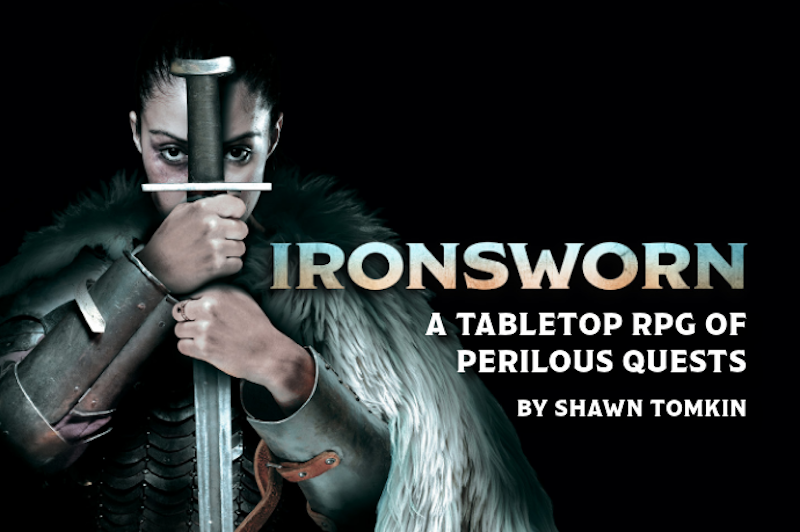
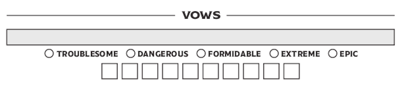
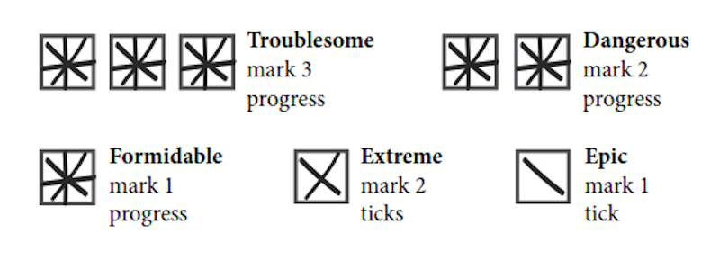
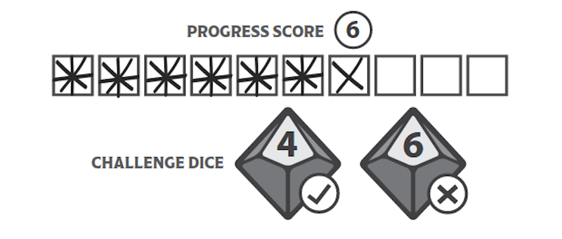
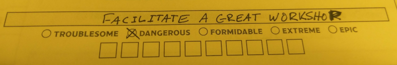
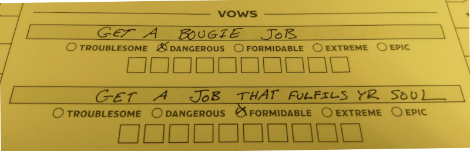
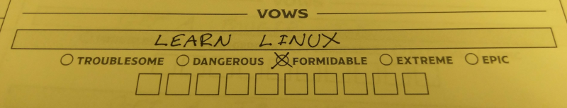
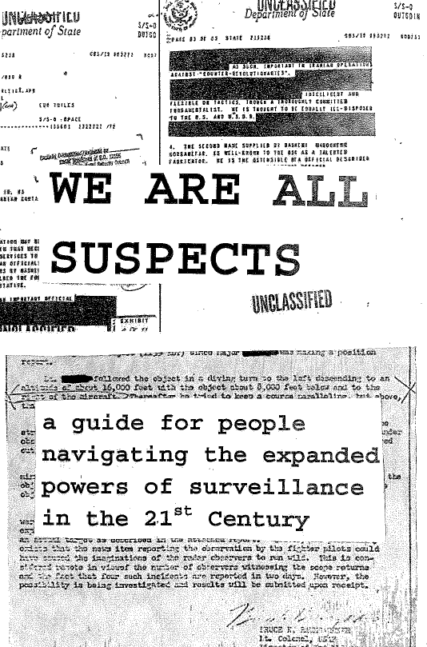
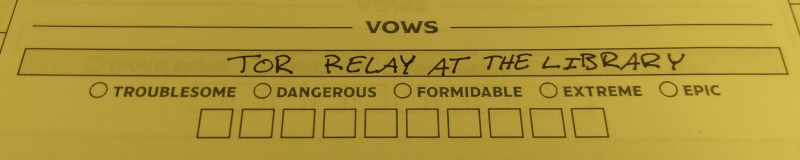
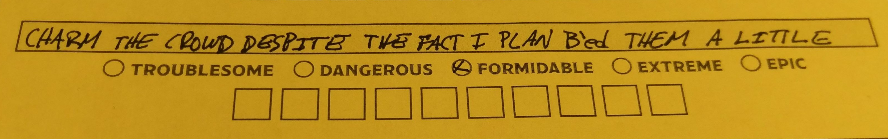

capac
I
ty tragedy starlet alabaster skyward manned
PR
I
VACY QUEST:
WR
I
TE your own story
Bryan Ne
I
l Jones Nashv
I
lle Publ
I
c L
I
brary





l
i
terary h
i
story of baseball

passphrases
d
I
ceware
KeePassXC
FLOSS
FLOSS
Free / L
I
bre Open Source Software
Free as
I
n Freedom:
Run
Ed
I
t
Contr
I
bute
Share

threat models

TorBrowser


l
I
brar
I
anbryan@r
I
seup.net